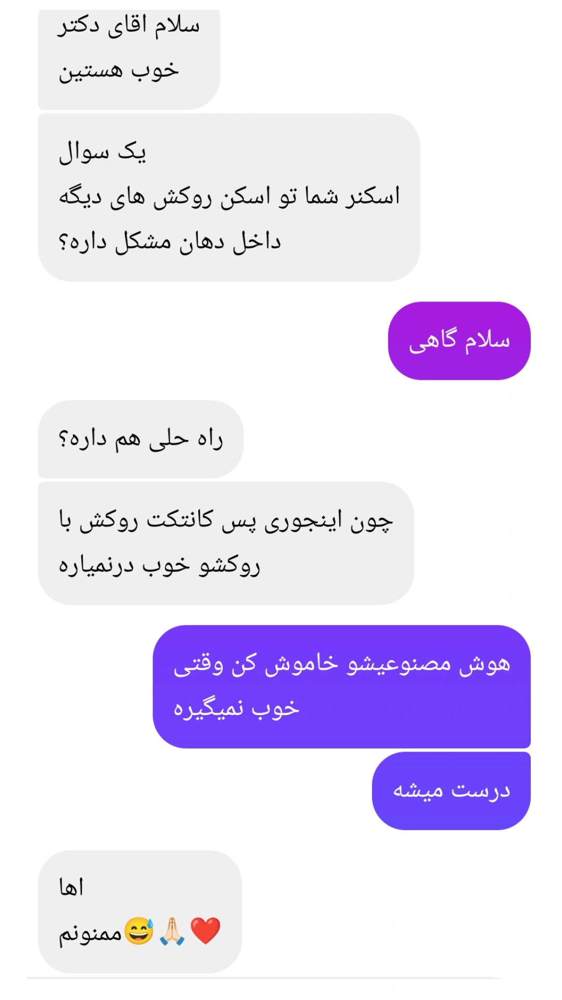

چرا اسکنر روی روکشهای خیلی براق یا کامپوزیت/رزینهای خیلی سفید خوب اسکن نمیکنه؟

اسکنرهای داخل دهانی، اطلاعات سطح رو از طریق تحلیل بازتاب نور جمعآوری میکنن. وقتی سطح خیلی براق باشه یا خیلی سفید و ترانسلوسنت باشه (مثل بعضی روکشها یا رزین و کامپوزیتهای روشن)، نور بیش از حد بازتاب پیدا میکنه (overexposure) و نرمافزار در تطبیق نقاط مرجع روی سطح دچار خطا میشه. همین موضوع باعث افت کیفیت یا ناقصماندن اسکن میشه. این مشکل مشابه چیزیه که در مورد روکشهای فلزی هم بهطور شناختهشده گزارش شده.
نکتهی دیگه اینه که بعضی اسکنرهای جدید یه لایهی هوش مصنوعی دارن که برای هر نقطهی اسکنشده یه امتیاز اطمینان محاسبه میکنه و بر اساس اون، دادهها رو وزندهی و stitch میکنه. روی سطوح غیرمعمول (خیلی براق، خیلی سفید، بدون تکسچر مشخص) این الگوریتم گاهی امتیاز اشتباه میده و همون نقاطی که اسکنشون سختتره رو کموزن یا حذف میکنه، که نتیجهش میشه اسکن ناقص یا پر از نویز.
راهحل عملی: خاموش کردن حالت پردازش هوشمند (AI mode) اسکنر، در بسیاری از موارد نتیجه رو بهبود میده. چون در این حالت، اسکنر بهجای تکیه بر مدل یادگیریشده، مستقیم روی دادهی خام کار میکنه که برای این سطوح خاص معمولاً دقیقتره.
توجه: علت دقیق این پدیده هنوز بهطور کامل و رسمی در منابع علمی مستند نشده و خاموشکردن AI بیشتر یک راهحل تجربی شناختهشده در بین کاربرانه، نه یک استاندارد رسمی از سازندهها.